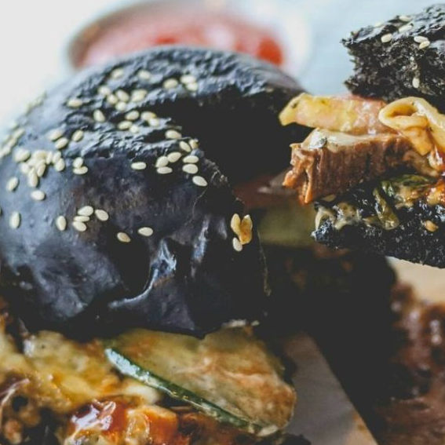

|  | BERIKUT ADALAH MANFAAT-MANFAAT YANG BISA DIDAPAT DARI PEMANFAATAN ARANG PADA MAKANAN |
Melansir Channel News Asia, dikatakan Jaclyn Reutens, ahli diet klinis dari APTIMA Nutrition & Sports Consultants, arang hitam aktif yang dicampurkan pada makanan biasanya terbuat dari bambu atau tanaman yang sudah tidak mengandung oksigen sehingga memunculkan zat karbon alami.
Sifat aktif dari arang berpori inilah yang dapat membantu mengobati keracunan, kembung, dan tingginya asam lambung. Hingga saat ini banyak juga yang percaya jika arang hitam pada makanan bisa dimanfatkan sebagai obat detoks bagi tubuh. Namun sayangnya, anggapan tersebut masih mitos belaka karena belum ada penelitian pasti yang mengatakan jika arang hitam bisa dimanfaatkan untuk detoksifikasi.
Arang aktif sendiri hadir dalam berbagai bentuk. Pada makanan arang biasanya sudah berbentuk bubuk yang digunakan hanya sebagai pewarna, namun, terdapat juga tablet arang yang dikonsumsi sebagai obat diare.
Meski mengandung manfaat yang cukup baik untuk tubuh, mengkonsumsi arang hitam ini juga tak boleh sembarangan terutama pada obat diare. Dilanjutkan Reutens, arang hitam dalam obat diare aman apabila dikonsumsi dalam jumlah kecil atau sesuai anjuran dokter. Jika berlebihan, sifat arang aktif yang dapat mengobati keracunan dengan menyerap semua zat di pencernaan bisa berujung buruk akibat terbawanya semua zat termasuk nutrisi baik dalam usus.
Maka dari itu, obat diare dengan arang aktif tidak dianjurkan untuk dikonsumsi sebagai obat-obatan harian. Disarankan Grace Kwok, manajer pengembangan bisnis perusahaan manufaktur makanan Swan Lake Food Industries, jangan mengkonsumi obat diare seperti ini saat mau makan atau mendekati waktu makan. Waktu yang baik adalah beberapa saat sesudah makan. Lebih jauh, arang aktif pada obat-obatan juga memiliki efek samping seperti sembelit, sakit perut, mual hingga sumbatan pada usus.